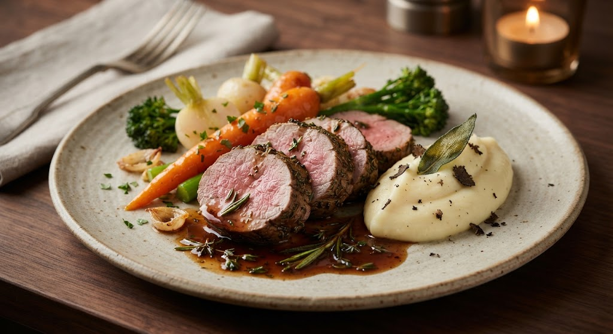
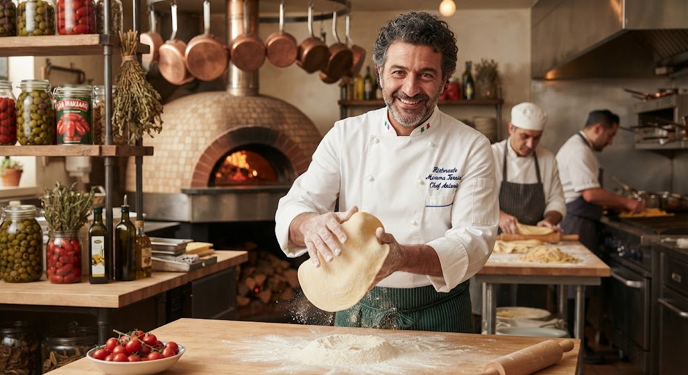

Chat da Crítica — Cozinha & Companhia
-

Chef Antônio Vecchi
12 de setembro de 2026
Entrada — Vieiras grelhadas com purê de couve-flor, beurre blanc e caviar

As vieiras chegaram no ponto exato, levemente douradas por fora e macias por dentro. O beurre blanc equilibrou a doçura do purê sem disfarçar o sabor do caviar. Entrada de altíssimo nível.
Leia a crítica completa -

Chef Larissa Mendonça
10 de setembro de 2026
Prato principal — Lombo de cordeiro com jus de alecrim, purê de batata trufado e legumes glaceados

O cordeiro chegou passado do ponto pedido e o jus estava aguado, sem a concentração que o alecrim pedia. O purê trufado salvou o prato, mas não o suficiente para justificar o valor cobrado.
Leia a crítica completa -

Chef Julien Rocher
05 de setembro de 2026
Sobremesa — Esfera de chocolate com mousse de chocolate amargo e frutas vermelhas

A esfera derreteu na mesa revelando a mousse por dentro — um efeito simples, mas muito bem executado. O amargor do chocolate cortou perfeitamente a acidez das frutas vermelhas. Final de menu memorável.
Leia a crítica completa